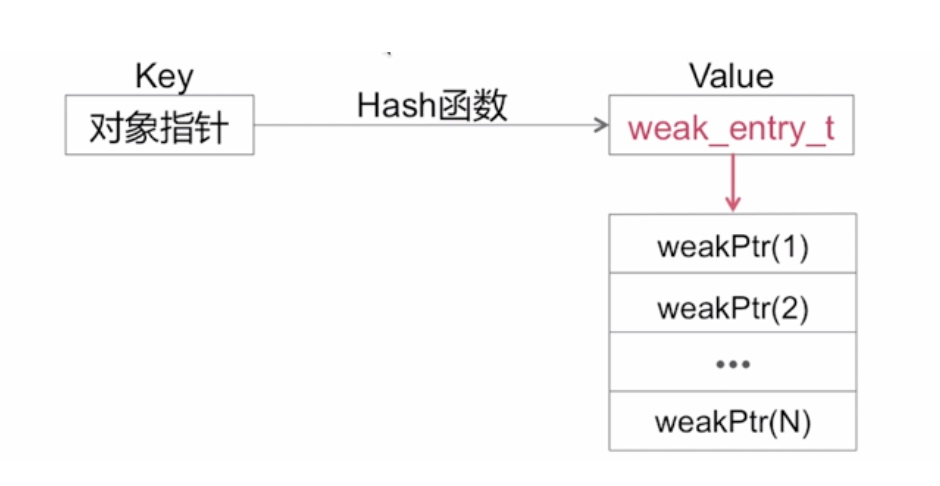

数据结构
- Spinlock_t (自旋锁)
- RefcountMap (引用计数表)
- weak_table_t(弱引用表)
在runtime内存空间中，SideTables是一个64个元素长度的hash数组，里面存储了SideTable。SideTables的hash键值就是一个对象obj的address。
因此可以说，一个obj，对应了一个SideTable。但是一个SideTable，会对应多个obj。因为SideTable的数量只有64个，所以会有很多obj共用同一个SideTable。
SideTables可以理解为一个全局的hash数组，里面存储了SideTable类型的数据，其长度为64。
SideTabls可以通过全局的静态函数获取：
static StripedMap<SideTable>& SideTables() {
return *reinterpret_cast<StripedMap<SideTable>*>(SideTableBuf);
}
自旋锁(Spinlock_t)
自旋锁是计算机科学用于多线程同步的一种锁，线程反复检查锁变量是否可用。由于线程在这一过程中保持执行，因此是一种忙等待。一旦获取了自旋锁，线程会一直保持该锁，直至显式释放自旋锁。
自旋锁避免了进程上下文的调度开销，因此对于线程只会阻塞很短时间的场合是有效的。因此操作系统的实现在很多地方往往用自旋锁。Windows操作系统提供的轻型读写锁 ----维基百科
- 忙等锁
- 适用于轻型访问(简单的 int 值 +1/-1 操作（在引用计数方面应用）)
引用计数表(RefcountMap)

size_t 代表的就是对应对象的引用计数值，实际上就是一个无符号 long 型的变量
引用计数表是哈希表，正如名字 Map，可以理解为是一个字典，也就是说通过一个指针可以找到对应对象的引用计数，这个查找过程也是哈希查找，这个哈希查找的哈希算法实际上是对传入对象的指针进行伪装的操作，然后获取对应的引用计数
在这里再次明确一下哈希查找的过程，实际上之所以使用哈希查找就是为了提高查找效率，而查找效率的提高源于我们存储一个对象的引用计数是通过这个函数来计算存储位置的，而获取这个对象所代表的引用计数值的时候，也是通过这个函数来计算应该获取的索引位置，所以插入和获取都是通过同一函数来计算位置的，也就避免了一些循环遍历的操作，所以哈希查找可以提高查找效率
size_t
假如 size_t 使用一个 64 位来表示

- 第一个二进制位 weakly_referenced 表示的是这个对象是否有弱引用，0没有，1有
- 第二位表示当前对象是否正在进行 dealloc 操作
- 后面的存储的就是这个对象实际的引用计数值
那么在计算对象的具体引用计数值，需要对这个值（2-63）向右偏移两位，因为后面这两位要去掉才可以取到真实的引用计数值
弱引用表(weak_table_t)

- weak_table_t 也是一张哈希表
- weak_entry_t 是一个结构体数组
在 Runtime 源码当中，弱引用表系统是通过 weak_table t 来定义的，weak table t 实际上也是一张哈希表，同样的给以一个对象的指针作为 Key ，通过一个哈希函数就可以计算出对应的弱引用的对象它的存储位置，weak entryt 是一个结构体数组，这个结构体数组当中存储的每一个对象是弱引用指针，也就是在代码中定义的，比如说 _ weak id obj，那么 obj 这个内存地址或者说指针就存储到 weak_entry_t 这个结构体数组当中
这就是弱引用表的数据结构的描述
参考:
https://blog.csdn.net/u013378438/java/article/details/82790332